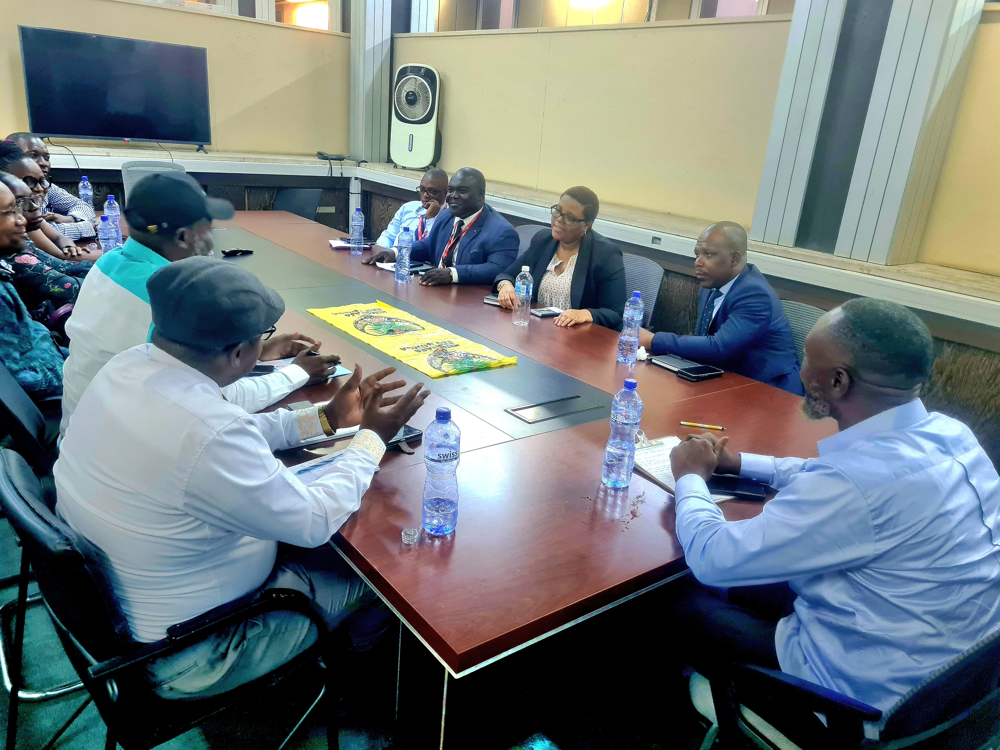

Les entreprises de la filière
Une fédération pour relier les métiers des déchets
La FECGD-RDC est la Fédération des entreprises de collecte, de gestion et de valorisation des déchets de la République démocratique du Congo.
La collecte ne suffit pas à elle seule : les déchets doivent ensuite être triés, orientés et traités selon leur nature. Ces tâches font intervenir des entreprises aux compétences différentes, dont les activités sont liées.
La fédération offre un cadre de concertation entre les opérateurs de la filière et les pouvoirs publics. Elle est apolitique, non confessionnelle et sans but lucratif.

- Nature
- Association sans but lucratif de droit congolais
- Champ d’intervention
- Ensemble du territoire de la RDC
- Siège
- N° 5897, 2e rue, Limete résidentiel / Petit boulevard, commune de Limete, Kinshasa, RDC.
Nos objectifs
Favoriser la concertation entre les opérateurs de la filière et les pouvoirs publics, la professionnalisation du secteur et l’amélioration de la qualité des services.
Notre mission
Représenter, défendre et promouvoir les intérêts professionnels des membres. Rapprocher les entreprises de la filière pour favoriser les échanges et une meilleure articulation de leurs activités.
Poursuivre l’échange
Mieux connaître nos activités ou rejoindre la fédération
Découvrez les métiers de la filière et les modalités de prise de contact avec notre équipe.